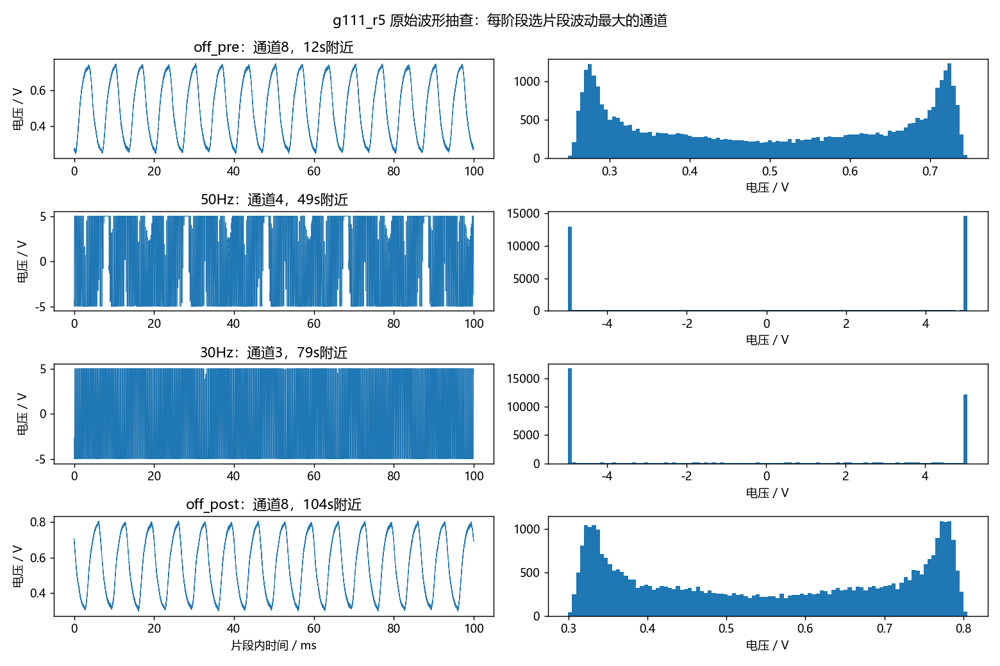
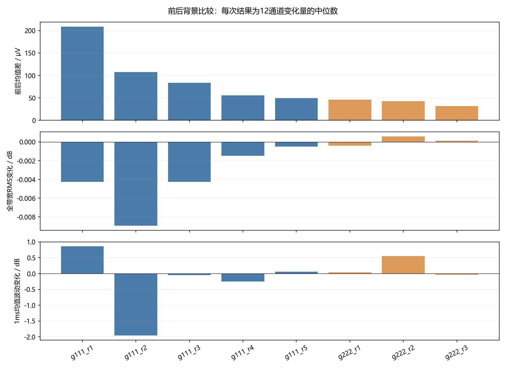
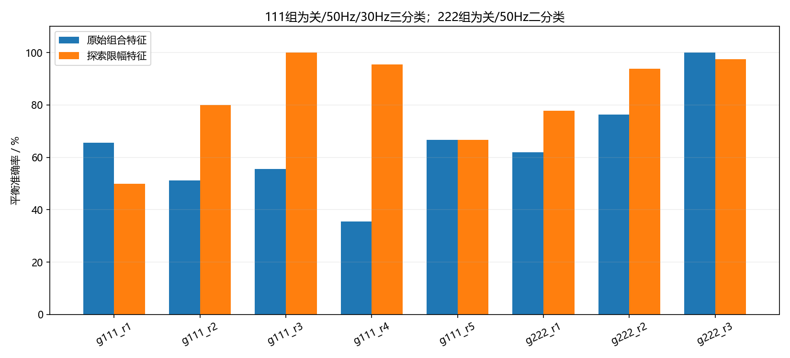
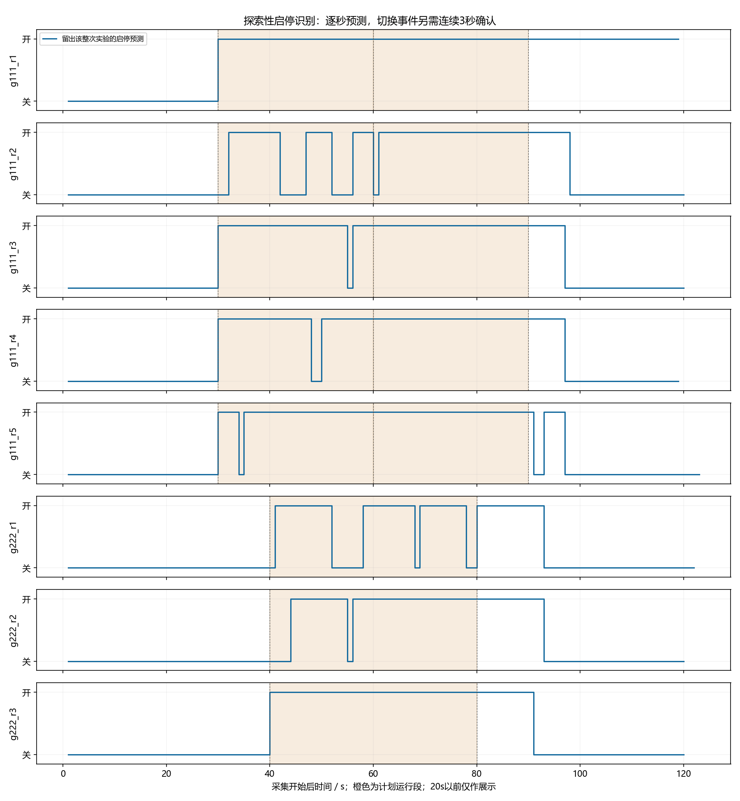
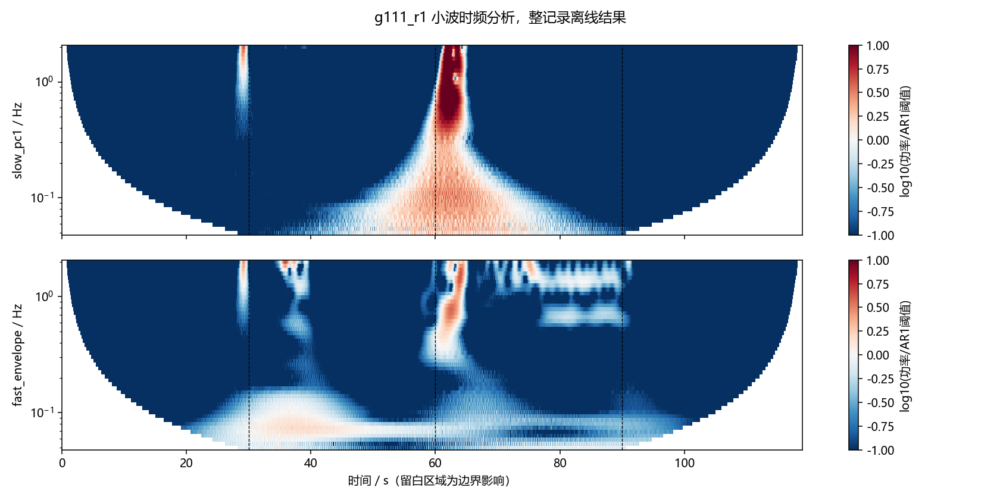

分析日期：2026年9月21日。对象：E:/Lab/raw/9.21 下111目录5次、222目录3次，共8份TDMS记录。报告所有数值来自本批实测文件；实验指令时刻采用用户提供的时间表。
这批数据能继续做，而且已经得到可用于讨论的启停识别结果；目前最有价值的进展是“操作状态是否能被检测到”，其次才是30 Hz与50 Hz的区分。
已确认：变频器全程不断电，启动过程约10 s，关闭过程约5 s。50→30 Hz的实际调速斜坡时间尚未单独给出，本轮保守留出12 s再取稳定窗口。探测器型号、距离、载波设置、各通道对应设备及量程未知；未自行补填。采集零点与人工指令是否严格同步未知，因此以下延迟是相对于计划指令时刻的估计，不是已标定的真实物理响应时间。
| 组别 | 计划顺序 | 本轮稳定统计窗口（s） |
|---|---|---|
| 111，5次 | 0–30关，30–60为50 Hz，60–90为30 Hz，90以后关 | 前背景5–25；50 Hz为42–57；30 Hz为72–87；后背景97–117 |
| 222，3次 | 0–40关，40–80为50 Hz，80以后关 | 前背景5–35；50 Hz为52–77；后背景87–117 |
稳定窗口不等于实际工况已完全稳定，只是按已知斜坡设置的排除规则。统一背景校准仅使用各文件5–20 s，保证首次启动之前就能得到。
| 记录 | 原文件 | 时长_s | 每通道采样点 |
|---|---|---|---|
| g111_r1 | 20260921104403.351724-1.tdms | 119.079 | 47631444 |
| g111_r2 | 20260921104637.684784-1.tdms | 120.448 | 48179366 |
| g111_r3 | 20260921104850.019512-1.tdms | 120.214 | 48085686 |
| g111_r4 | 20260921105103.291624-1.tdms | 119.643 | 47857362 |
| g111_r5 | 20260921110139.677427-1.tdms | 123.155 | 49261931 |
| g222_r1 | 20260921105430.205666-1.tdms | 122.324 | 48929403 |
| g222_r2 | 20260921105659.486410-1.tdms | 120.844 | 48337446 |
| g222_r3 | 20260921105922.663283-1.tdms | 120.369 | 48147429 |
全部文件均为12通道、400 kHz，单位Volts。所有通道样本数一致，逐块读取时检查了连续性；全量读取覆盖8份文件的全部采样点。所有完整1 s区间计算原始频谱；末尾不足1 s不做频谱，末尾不足0.1 s不做分块特征，但仍参与全文件范围/有限值检查。记录实际长119.08–123.15 s，未强行拉伸成120 s。
注意：g111_r5实际采于11:01，晚于222组三次。因此“111训练→222测试”是跨协议检验，不是严格按时间向未来预测。
所有12通道在初始背景中均通过基本有限值与非平坦检查，分类保持相同通道集合；这不等于已经证明12路全是有效探测器通道。全文件异常通道标记保存在channel_health.csv，未根据整次未来数据事后删通道来提高识别率。
原始片段显示，部分通道在运行时从约+5 V附近出现大幅向负电压摆动，在强响应记录中到达约−5 V附近；另一些通道有不同的基准电压和周期波形。每个稳定阶段抽取3段0.1 s原始波形、合计0.3 s用于核查；这些片段只用于质量检查及高频小波/双相干，不代替全记录统计。

图中各行选择该阶段抽样片段内波动最大的通道，所以行与行可能不是同一通道，不能据此比较同一通道增益。详细通道编号、极值、负值占比、接近±5 V的样本占比及最常出现的量化值，见raw_excerpt_audit.csv。
这里确有大幅输出变化，但还不能判定是传感器真实输出、前端饱和、限幅、耦合干扰还是其他采集因素。 旧质量脚本的clip_fraction按|V|≥9.9计算；它为零不排除±5 V附近的前端饱和。本报告不用该字段宣称“无饱和”，也没有擅自把电压折返、去平台或换算成场强。
以下均为“后背景减前背景”。均值偏移逐通道计算后取中位数；RMS变化先逐通道算20log10(后/前)再取中位数。不能把全体通道中位数理解为每个通道都稳定。
| 记录 | 背景均值偏移_通道中位数_uV | 背景RMS变化_通道中位数_dB | 最大通道背景均值偏移绝对值_V |
|---|---|---|---|
| g111_r1 | 208.823 | -0.004 | 0.736 |
| g111_r2 | 107.596 | -0.009 | 0.890 |
| g111_r3 | 83.856 | -0.004 | 0.005 |
| g111_r4 | 55.853 | -0.001 | 0.011 |
| g111_r5 | 49.435 | -0.000 | 0.041 |
| g222_r1 | 45.911 | -0.000 | 0.021 |
| g222_r2 | 42.168 | 0.001 | 0.051 |
| g222_r3 | 31.763 | 0.000 | 0.039 |

全带宽RMS的通道中位数变化介于约−0.009和+0.001 dB，看起来很稳定；慢变均值的中位偏移却全部为正，约32–209 μV。1 ms均值序列在每0.1 s内的波动量，前后变化约−1.96到+0.86 dB。后者不是理想低通后的“严格低于1 kHz噪声”，只能称为相应时间尺度的均值波动。
用前/后背景标签进行留一整次实验识别，111组平均平衡准确率90.5%，222组57.8%。前者说明当前特征下前后背景可区分，可能包含持续漂移或操作后的残留影响；后者接近随机也不能证明等效，因为只有3次独立重复。本轮没有预先给定工程等效界限，因此不做“背景通过等效检验”的结论。
建议论文表述：前后停泵背景的全带宽波动强度整体接近，但慢变分量及个别通道不完全恢复；状态分析应采用逐次基准归一化，并分别核查启动前和停机后误报。 不把前后背景直接合并做一个绝对统一背景，也不做原始波形逐点相减。
各通道变化、2 s分块自助法区间见background_channel_comparison.csv。该区间只是单记录内的描述性不确定度，不能把大量采样点当成大量独立实验。
| 方法组 | 输入与本轮实施 | 实际用途与限制 |
|---|---|---|
| 原始FFT/PSD与频带 | 每完整1 s、Hann窗、原始400 kHz信号；1 Hz频率栅格；30/50/100 Hz邻带及宽频带 | 量化谱形变化；30、50 Hz线峰并不等同于变频器指令频率，50 Hz还可能包含工频干扰 |
| 时域、差分、慢变和快残差 | 每0.1 s均值、去均值RMS、差分RMS/√2；1 ms均值波动及残差 | 简单、可逐块计算，适合启停识别；残差是块均值分解结果而非严格高通频带 |
| 自相关/AR1、Allan偏差 | 每状态固定15 s，每通道；Allan时间0.1/0.2/0.5/1/2/3 s，沿用旧实现先去线性趋势 | 比较去趋势后的稳定性与相关时间；不能代替未去趋势的均值漂移比较，长平均时间点很少 |
| CWT、AR1红噪声基准、同步挤压 | 整记录10 Hz慢变PC1与快残差包络；另对原始片段做高频CWT | 定位变化时间尺度；整记录PCA、小波边界、双向滤波结果属于离线解释 |
| EMD、EEMD、VMD | 整记录两种慢速信号；EEMD20次，VMD K=4、α=2000；状态15 s局部复算EMD/VMD | 观察模态能量迁移；不自动给模态赋予物理名称 |
| 通道对齐EMD、投影MEMD、稳健PCA | 12通道慢变序列；MEMD16方向、最多5模态、10次筛分 | 共同变化和通道差异；投影MEMD是现有工程实现，不宣称等同于所有文献中的MEMD实现 |
| 熵、MSE、DFA、MFDFA、RQA | 整记录与各状态固定15 s局部PC1；相位替代序列整记录19次、局部9次 | 描述复杂度；局部仅150个点，慢尺度与多重分形参数不适合强结论 |
| 状态空间 | 整记录局部线性趋势模型 | 15/16个拟合报告收敛；g111_r3的快包络未收敛，参数不作定量证据 |
| Granger、通道相关、PC1占比 | 29个15 s状态窗口，12通道VAR最大5阶，沿用FDR处理 | 仅探索预测相关结构；高维短窗口和共同驱动均妨碍物理因果解释 |
| 相位—幅值耦合、小波相干、时滞 | 慢分量与快包络；PAC相位0.15–0.5 Hz、幅值调制0.5–2 Hz；39次替代/平移 | 操作阶跃可能共同驱动二者，显著不等于存在某个物理耦合机制 |
| 双相干与高频小波 | 每状态3个0.1 s原始片段；通道标准化后取中位信号；双相干19次替代 | 只代表所选片段，非全程；有限片段、共同操作与非线性限幅均可影响结果 |
| PELT、弛豫与矩阵束 | 整记录PELT离线分段；按计划切换点取12 s比较单指数/双指数/衰减振荡，另保存15 s单指数拟合 | PELT不能冒充实时检测；启动斜坡不是自由衰减，时间常数暂不命名为系统固有参数 |
| 分组可辨识性 | 按整次记录留出；训练集标准化/拟合；无时间或计划阶段作为输入 | 主要任务为跨重复启停识别；与同批数据随机拆窗的高准确率有本质区别 |
4/8/12 kHz及约100 kHz频带只是沿用比较窗口，载波频率未确认，不能直接叫本次载波或谐波。PSD图片把1 Hz栅格汇总成100 Hz频宽用于显示，不能用该粗图判断30与50 Hz分离；窄带积分使用原始1 Hz栅格。
每次拿一整份记录作测试，其余同协议记录训练；启停合并任务则其余7份训练。测试记录仅用自身5–20 s初始背景作基准。每完整1 s给出一次状态预测。训练只使用上述稳定窗口，不以时间、文件编号、实验序号为分类特征。
平衡准确率BA是各类别召回率的平均，再对各独立记录等权平均。111组随机水平为33.3%，222及合并启停为50%。单次记录中多个秒窗口有关联，不能把它们当作独立重复来制造很小的误差条。
原始组合27特征：各通道归一化慢变/波动特征的中位数、25%和75%分位，以及12个频带对比。探索版34特征：慢变绝对标准化偏移限到0–20、波动dB限到−10至30、频带dB限到−10至40，采用中位数和90%分位，逻辑回归C=0.1。它降低少数极端幅值的影响，同时保留局部通道响应。限幅只用于特征，未修改原始数据。
| 任务 | 原始组合特征BA_% | 探索限幅特征BA_% | 仅频谱特征BA_% |
|---|---|---|---|
| 111：关/50Hz/30Hz | 54.889 | 78.444 | 60.944 |
| 222：关/50Hz | 79.444 | 89.722 | 77.444 |
| 全部8次：关/运行 | 79.833 | 91.479 | nan |

探索版在111组的逐次BA为50.0%、80.0%、100.0%、95.6%、66.7%；稳定区分30/50 Hz并非每次都成功。尤其g111_r5在幅值/谱形上与前几次很不同，不能只看平均分。
原始组合特征的39次循环移位对照结果：111三分类p=0.050，222二分类p=0.025，合并启停p=0.025。它保留了部分时间相关结构，但同一固定操作顺序、有限重复及未校正多个方法比较仍限制解释；39次的最小p就是0.025。探索版未再用该检验包装成确认性结果。
原始特征111训练→222测试的BA分别57.8%、73.8%、97.5%，运行段漏判分别76%、44%、0%。这说明跨协议迁移对响应强弱敏感，尚不能称为可直接通用部署。
15 s局部复杂度/模态9特征分类平均BA：111为56.7%、222为75.0%。每状态只有一个窗口，样本量很小，也与逐秒任务的时间分辨率不同；目前不能声称这些复杂算法优于简单特征。
三秒连续同一预测才确认新状态。初始状态为关，校准结束后从第23 s开始运行状态确认；事件评分使用“计划指令之后0–15 s内出现正确的新状态”，指令之前的提前跳变不计成功，事件一对一匹配。分类器预测时不读取切换时间；时间表只用于训练标签和事后评价。

图展示逐秒标签，表展示三秒确认后的事件，二者时间不会完全相同。橙色区域是指令运行段，并未把启停斜坡从图上抹去。
| 记录 | 目标 | 计划时刻_s | 确认时刻_s | 距指令延迟_s |
|---|---|---|---|---|
| g111_r1 | on | 30 | 32.0 | 2.0 |
| g111_r1 | off | 90 | 未检出 | 未检出 |
| g111_r2 | on | 30 | 34.0 | 4.0 |
| g111_r2 | off | 90 | 100.0 | 10.0 |
| g111_r3 | on | 30 | 32.0 | 2.0 |
| g111_r3 | off | 90 | 99.0 | 9.0 |
| g111_r4 | on | 30 | 32.0 | 2.0 |
| g111_r4 | off | 90 | 99.0 | 9.0 |
| g111_r5 | on | 30 | 32.0 | 2.0 |
| g111_r5 | off | 90 | 99.0 | 9.0 |
| g222_r1 | on | 40 | 43.0 | 3.0 |
| g222_r1 | off | 80 | 95.0 | 15.0 |
| g222_r2 | on | 40 | 46.0 | 6.0 |
| g222_r2 | off | 80 | 95.0 | 15.0 |
| g222_r3 | on | 40 | 42.0 | 2.0 |
| g222_r3 | off | 80 | 93.0 | 13.0 |
探索启停方案：15/16事件命中；启动相对指令延迟2–6 s，停机成功事件延迟9–15 s。启动判定可能发生在10 s升速期间，意味着看到了变化，不是已经到达稳定转速。停机延迟包含约5 s减速过程、1 s窗口、3次连续确认及信号恢复等影响；没有真实开关记录和转速实测，不能直接将“9–15减5”当成纯算法延迟。
共输出21次启停状态变更，其中15次匹配计划事件，6次未匹配；这些未匹配项包含重复跳变或过早/过晚变化，并不全是相同成因的假警报。全部明细见exploratory_clipped_alarms.csv。稳定背景误报时间比例按独立记录等权平均为8.96%，运行漏判为8.08%，两者与事件命中率不是同一种指标。
g111_r1停机漏检最需要复查：后背景仍被判为运行，不能删除这次来提高分数。探索三状态方案命中16/21次切换，50→30 Hz变化仅3/5成功。原始组合方案命中12/21，保留作为未经本轮追加特征改进的参照。

图中纵轴是慢变信号/包络的变化频率，不是电机30或50 Hz。虚线是计划指令时刻；边缘留白是小波边界影响区。红色表示超过所设AR1红噪声比较阈值，突变和斜坡也会产生显著小波能量，不能把每个红区叫作新的固有振荡。
PAC和小波相干的8次检验都落在本轮最小p=0.025；由于全记录包含明确的同步操作，这支持二者共同变化，不能排除共同输入造成的关联。双相干p范围0.05–0.30，最小值又受19次替代序列限制；不得据此宣称验证了非线性物理机制。
EMD和投影MEMD的数值重构误差接近浮点精度。EEMD重构相对误差中位数约0.115、最大0.398；VMD中位数约0.284、最大0.600。这说明“代码完成”不代表分解完整，VMD/EEMD模式能量不能当作全部输入能量的精确分账。
42组切换信号/窗口的事件形状比较中，单指数优选11、双指数26、衰减振荡5；仅8/42通过旧实现的参数可辨识条件，拟合R²中位数约0.385。高R²个例也可能只是拟合了人为斜坡，暂不提取一个统一的系统时间常数作为论文核心结果。
Granger边、MFDFA宽度、递归确定性等保留在表中作为探索，不能从当前短窗口推出物理因果、分形机制或混沌。高频片段标准化后聚合还会改变绝对幅值，所以高频小波/双相干图不作绝对电压强度的替代。
本批数据可增加一节“变频器保持通电条件下的启停与变频状态响应”，按下列证据顺序组织：实验时序与斜坡说明 → 原始通道输出及质量核查 → 前后背景差异 → 时频变化 → 留一重复状态识别 → 漏判和延迟 → 适用边界。
可报告：同一次记录内不同操作状态对应可测输出变化；背景稳定性具有特征与通道依赖性；跨重复启停识别具有可行性；频率细分及跨协议迁移仍不稳定。不能报告：已从电压变化中分离流体、电磁、电化学贡献；已证明30/50 Hz特定物理源；已证明远距离性能改善；已得到无漏检实时系统。
实际执行了全量提取、基础分组分析、高级方法复算、原始数据核查及探索特征验证、补充稳定性/事件模型、报告生成。8份记录全部样本读取检查通过；RMS方差分解一致性误差不超过1.1×10⁻¹⁴ V²。状态空间1次未收敛如上明确保留，未把有限结果当作全部成功。
新增脚本均位于scripts/，名称如下；原始TDMS及历史分析脚本未修改，本轮文件独立写入results/20260921_switching/。Python环境为D:/Anaconda/python.exe，历史补充依赖来自.codex_tmp/mentor_method_deps。输出CSV使用UTF-8 BOM。
$env:PYTHONIOENCODING='utf-8'
$env:OPENBLAS_NUM_THREADS='2'
$env:OMP_NUM_THREADS='2'
D:\Anaconda\python.exe scripts/analyze_20260921_extract.py
D:\Anaconda\python.exe scripts/analyze_20260921_switching.py
D:\Anaconda\python.exe scripts/analyze_20260921_advanced.py
D:\Anaconda\python.exe scripts/audit_20260921_switching.py
D:\Anaconda\python.exe scripts/analyze_20260921_dynamics.py
D:\Anaconda\python.exe scripts/report_20260921_switching.py
提取脚本存在同名缓存时跳过重读，若原始文件后来被替换，需另建输出或明确更新缓存后再算，不应把旧缓存当新数据。meta保存原路径、大小、修改时间和通道属性。
下表的completed表示函数执行并返回，不代表满足所有科学适用条件；Granger、PELT、事件形状及Allan等结果在各自文件中另存。
| method | status | 执行次数 |
|---|---|---|
| CWT_AR1 | completed | 16 |
| EEMD | completed | 16 |
| EMD | completed | 16 |
| VMD | completed | 16 |
| aligned_channel_EMD | completed | 8 |
| bicoherence | completed | 29 |
| complexity | completed | 29 |
| complexity_MSE_MFDFA_RQA | completed | 16 |
| emd | completed | 29 |
| high_frequency_CWT | completed | 29 |
| phase_amplitude_coupling | completed | 8 |
| projection_MEMD | completed | 8 |
| robust_PCA | completed | 8 |
| state_space | completed | 16 |
| synchrosqueezing | completed | 16 |
| vmd | completed | 29 |
| wavelet_coherence | completed | 8 |